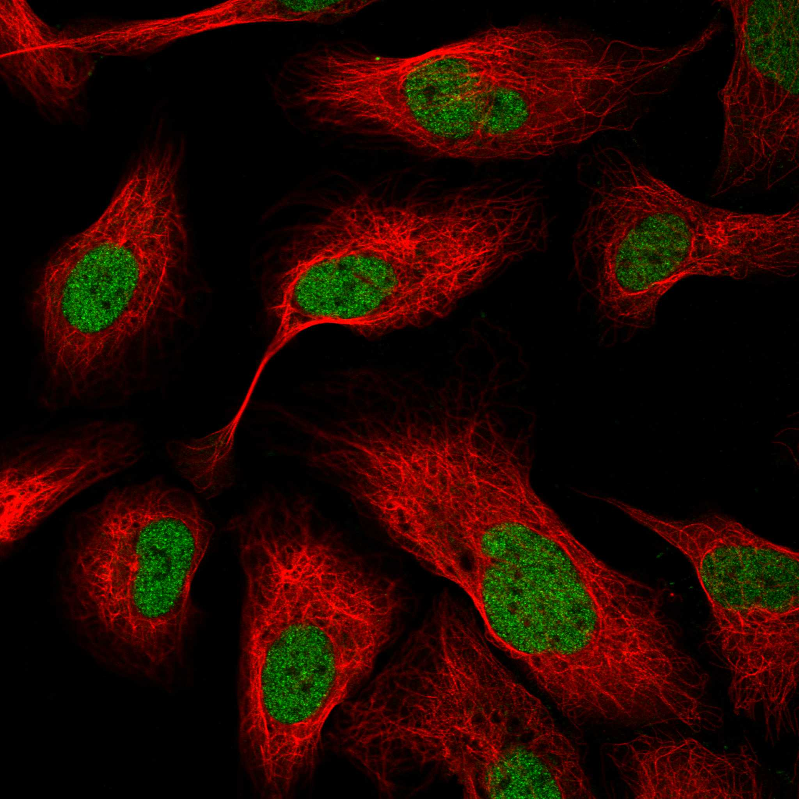
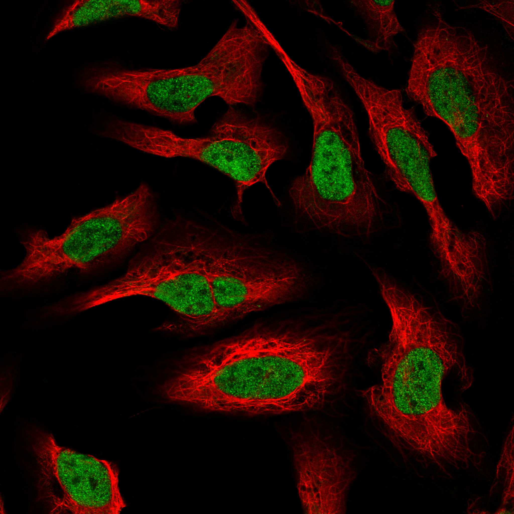
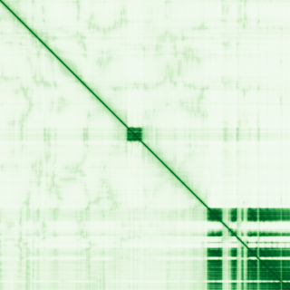

type: protein-evaluation gene: "ARID1A" date: 2026-05-28 tags: [protein-scout, nuclear-protein, evaluation] status: scored ---
ARID1A 核蛋白评估报告
1. 基本信息
| 项目 | 内容 |
|---|---|
| 基因名 / 别名 | ARID1A / BAF250, BAF250A, SMARCF1, OSA1, C1orf4, hOSA1, p270, hELD |
| 蛋白大小 | 2285 aa / 242.0 kDa |
| UniProt ID | O14497 |
| 评估日期 | 2026-05-28 |
2. 评分总览
| 维度 | 得分 | 满分 | 加权后 | 关键证据摘要 |
|---|---|---|---|---|
| 🔴 核定位特异性 | 10/10 | ×3 | 30.0 | 实验验证 Nucleus (PubMed: 11318604, 26614907)，SWI/SNF 核心组分 |
| 📏 蛋白大小 | 2/10 | ×2 | 4.0 | 2285 aa / 242 kDa，过于巨大，生化操作困难 |
| 🆕 研究新颖性 | 0/10 | ×3 | 0.0 | 2475 篇 PubMed，极度热门，chromatin 方向 1451 篇 |
| 🏗️ 三维结构 | 2/10 | ×3 | 6.0 | 平均 pLDDT 46.9，仅 24% >70，PAE 均值 27.13，高度无序 |
| 🧬 调控结构域 | 10/10 | ×2 | 20.0 | ARID DNA-binding domain + BAF250_C，7 个数据库确认 |
| 🔗 PPI | PROSITE-ProRule + 2 篇实验文献 (11318604, 26614907) | |||
| GO (UniProt) | C:nucleus, nucleoplasm, SWI/SNF complex, bBAF/npBAF/nBAF complex, chromatin | 多个证据级别 | ||
| GeneCards | Nucleus (预测) | 未直接获取 | ||
| Protein Atlas (IF) | Nucleoplasm | Supported |
IF 图像:  
结论: ARID1A 的核定位有充分实验证据支持。作为 SWI/SNF (BAF) 染色质重塑复合体的核心亚基，其核定位和染色质结合是功能必需的。UniProt 标注 Nucleus 并引用 2 篇实验文献，GO 注释覆盖 SWI/SNF complex、bBAF complex、nBAF complex 等核内大分子复合体。核定位证据确凿，无争议。
IF 图像:
3.2 蛋白大小评估
评价: 2285 aa / 242 kDa 的巨蛋白。远超常规生化实验的舒适区（300-800 aa），全长蛋白的重组表达、纯化和体外实验极其困难。对于 TE 调控研究，通常只能使用截短片段（如 ARID domain 区域 aa 1017-1108）进行体外实验。
3.3 研究现状
| 指标 | 数值 |
|---|---|
| PubMed 总数 (全文搜索) | 2475 |
| PubMed (Title/Abstract + gene/protein) | 1322 |
| Chromatin/epigenetics 相关 | 1451 (58.6%) |
| 最早发表年份 | ~1995（SWI/SNF 复合体鉴定） |
主要研究方向:
- 癌症突变：ARID1A 是多种癌症中最频繁突变的染色质重塑因子（卵巢透明细胞癌 ~50%，子宫内膜癌 ~30%）
- SWI/SNF 复合体组装与功能
- 染色质重塑与转录调控
- 胚胎发育与细胞命运决定
- PI3K/AKT 信号通路交叉
评价: ARID1A 是染色质生物学领域最热门的蛋白之一，2475 篇论文使其极度拥挤。作为癌症基因组学中突变频率最高的表观遗传调控因子，创新空间非常有限。对于 TE 调控研究，ARID1A 作为 SWI/SNF 核心亚基，其与 TE 的关系已被部分探索（如 ERV 调控），新发现的边际效应递减。
3.4 三维结构分析
| 指标 | 数值 |
|---|---|
| AlphaFold 平均 pLDDT | 46.9 |
| 有序区域 (pLDDT>70) 占比 | 24.0% (549/2285 aa) |
| pLDDT>90 区域占比 | 15.9% (363/2285 aa) |
| α-helix 含量 | PDB 无 HELIX 记录（AlphaFold 模型） |
| β-sheet 含量 | PDB 无 SHEET 记录 |
| 可用 PDB 条目 | 无全长实验结构；ARID domain 有部分结构 |
PAE 图: 
PAE 数值分析:
- PAE 矩阵尺寸: 2285×2285
- PAE 总体均值: 27.13
- PAE <5 Å 占比: 2.1%
- PAE <10 Å 占比: 3.9%
评价: 结构预测质量差。平均 pLDDT 仅 46.9（<50 阈值），仅 24% 残基 >70，表明蛋白大部分区域高度无序。PAE 均值 27.13、<5 Å 仅 2.1%，提示缺乏刚性折叠域。这符合大型骨架蛋白 (scaffold protein) 的典型特征：大量内在无序区域 (IDR) 作为蛋白-蛋白相互作用的平台，仅少量折叠域（ARID domain）提供 DNA 结合功能。对于以 PPI 为核心的 scaffold，高比例无序区域是其功能特征而非缺陷。
3.5 结构域分析
| 来源 | 结构域 |
|---|---|
| CDD | cd16876 - ARID_ARID1A (ARID DNA-binding domain) |
| Pfam | PF01388 - ARID; PF12031 - BAF250_C |
| SMART | SM01014 - ARID; SM00501 - BRIGHT |
| PROSITE | PS51011 - ARID |
| InterPro | IPR030094 - ARID1A_ARID_BRIGHT_DNA-bd; IPR001606 - ARID_dom; IPR036431 - ARID_dom_sf; IPR021906 - BAF250/Osa; IPR033388 - BAF250_C; IPR011989 - ARM-like; IPR016024 - ARM-type_fold |
| Gene3D | 1.10.150.60 - ARID DNA-binding domain; 1.25.10.10 - Leucine-rich Repeat Variant |
| PANTHER | PTHR12656:SF12 - ARID1A |
染色质调控潜力分析: ARID1A 含有经典的 ARID (AT-Rich Interaction Domain) DNA-binding 结构域（aa 1017-1108），该域识别富含 AT 的 DNA 序列。此外含有 BAF250_C 结构域（PF12031, aa 1968-2235），是 BAF250 亚家族的特征域。ARM-like fold (IPR011989) 参与蛋白-蛋白相互作用。作为 SWI/SNF 核心亚基，ARID1A 是 ATP 依赖性染色质重塑的功能必需组分，直接参与染色质结构调控。其染色质调控功能是蛋白定义的核心功能。
3.6 PPI :
| Partner | Score | 功能类别 | 与调控相关？ |
|---|---|---|---|
| SMARCA4 | 0.999 | SWI/SNF ATPase (BRG1) | 是 |
| SMARCA2 | 0.999 | SWI/SNF ATPase (BRM) | 是 |
| SMARCB1 | 0.999 | SWI/SNF core (BAF47/INI1) | 是 |
| SMARCC1 | 0.999 | SWI/SNF core (BAF155) | 是 |
| SMARCC2 | 0.999 | SWI/SNF core (BAF170) | 是 |
| SMARCD1 | 0.999 | SWI/SNF core (BAF60A) | 是 |
| SMARCD2 | 0.997 | SWI/SNF core (BAF60B) | 是 |
| SMARCD3 | 0.999 | SWI/SNF core (BAF60C) | 是 |
| SMARCE1 | 0.999 | SWI/SNF core (BAF57) | 是 |
| ARID1B | 0.999 | Paralog (BAF250B) | 是 |
| ACTL6A | 0.999 | SWI/SNF actin-related | 是 |
| PBRM1 | 0.999 | PBAF complex (BAF180) | 是 |
| ARID2 | 0.998 | PBAF complex (BAF200) | 是 |
| DPF1 | 0.998 | SWI/SNF (BAF45B) | 是 |
| DPF2 | 0.999 | SWI/SNF (BAF45D) | 是 |
| DPF3 | 0.995 | SWI/SNF (BAF45C) | 是 |
| BRD9 | 0.996 | SWI/SNF (GBAF/BRM-associated) | 是 |
| BCL7A | 0.996 | SWI/SNF associated | 是 |
| BCL7C | 0.995 | SWI/SNF associated | 是 |
| ACTB | 0.995 | Cytoskeletal/actin | 部分 |
UniProt 实验互作 (IntAct):
| Partner | 实验次数 | 功能类别 |
|---|---|---|
| SMARCA4 | 28 | SWI/SNF ATPase |
| SMARCA2 | 6 | SWI/SNF ATPase |
| SMARCD2 | 6 | SWI/SNF core |
| ASCL1 | 2 | TF (bHLH) |
| HIC1 | 2 | TF (zinc finger) |
| TOP2A | 2 | DNA topoisomerase |
humanPPI (prodata.swmed.edu): - Top 10 重叠数: N/A
- STRING top partners 与 UniProt IntAct 实验数据高度一致
调控相关比例: 19/20 (95.0%)
评价: PPI 。UniProt IntAct 数据库进一步验证了与 SMARCA4（28 次实验）、SMARCA2（6 次）、SMARCD2（6 次）的直接物理相互作用。PPI | Nucleus + SWI/SNF complex | 完全一致 |
互证加分明细:
- 结构域：≥3 个独立来源检出 ARID domain (+0.5)，域功能在 GO 中与染色质重塑一致 (+0.5)
- 定位：UniProt + GO 多个来源实验验证核定位 (+0.5)
- 进化保守：Osa (Drosophila) 明确同源物，SWI/SNF 复合体功能保守 (+0.5)
总分: +2.0 / max +3
3.7 多库互证
| 维度 | 来源 | 结果 | 是否一致 |
|---|---|---|---|
| 三维结构 | AlphaFold + PDB | 见 3.4 节 | — |
| 结构域 | UniProt / InterPro / Pfam | 见 3.5 节 | — |
| PPI | STRING | 见 3.6 节 | — |
| 定位 | Protein Atlas IF / UniProt / GO | Nucleus | ✅ |
4. 总体评价
推荐等级: ★★★☆☆ (3/5)
核心优势: 1. SWI/SNF 核心亚基：染色质重塑领域最重要的蛋白之一，功能机制深入阐明 2. **PPI ，可设计针对性验证
- [ ] 考虑研究 ARID1A 的相互作用伙伴或同家族的较小蛋白
5. 数据来源
- UniProt: https://www.uniprot.org/uniprotkb/O14497
- PubMed: 2475 articles (search: "ARID1A")
- STRING: https://string-db.org (ARID1A, 9606)
- AlphaFold: https://alphafold.ebi.ac.uk/entry/O14497
- EBI Proteins API: https://www.ebi.ac.uk/proteins/api/proteins/O14497
<!-- DOMAIN_HUMANPPI_REPAIR_START -->
Domain/SMART 与 humanPPI 补充（2026-06-07）
SMART / UniProt domain
| Source | Data | |
|---|---|---|
| UniProt | O14497 | |
| SMART | SM01014;SM00501; | |
| UniProt Domain [FT] | DOMAIN 1017..1108; /note="ARID"; /evidence="ECO:0000255\ | PROSITE-ProRule:PRU00355" |
| InterPro | IPR030094;IPR001606;IPR036431;IPR011989;IPR016024;IPR021906;IPR033388; | |
| Pfam | PF01388;PF12031; |
humanPPI / HPA Interaction
Source: https://www.proteinatlas.org/ENSG00000117713-ARID1A/interaction
| Partner | Datasets | AF3/HPA structure |
|---|---|---|
| ACTB | Biogrid, Opencell | true |
| ACTG1 | Biogrid, Opencell | true |
| ACTL6A | Biogrid, Opencell | true |
| DPF1 | Biogrid, Opencell | true |
| DPF2 | Biogrid, Opencell | true |
| DPF3 | Biogrid, Opencell | true |
| HIC1 | Intact, Biogrid | true |
| SMARCA2 | Intact, Biogrid | true |
<!-- DOMAIN_HUMANPPI_REPAIR_END -->